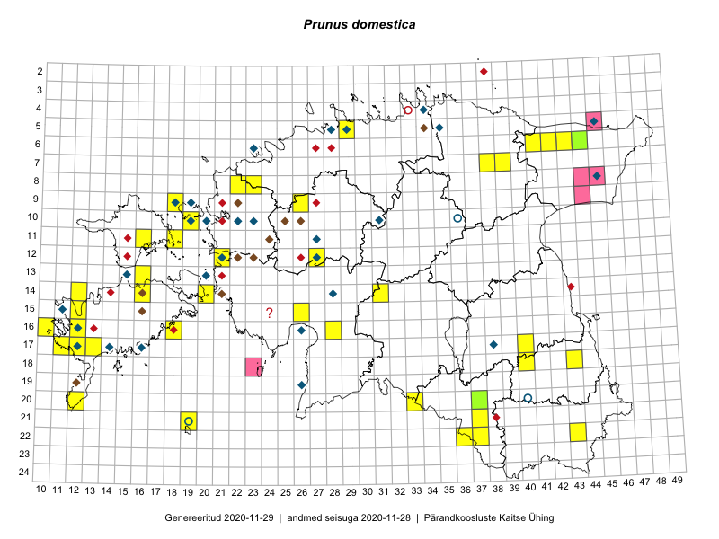

Prunus domestica
Uuendatud: 2016-12-01
Kaardile koondatud taksonid: Prunus communis Huds.; Prunus domestica L.; Prunus domestica subsp. domestica L.

Kaart põhineb 44 kirjel.
Kuvatud viited 20 esimesele andmebaasikirjele, ülejäänud PlutoFis
- Toomas Kukk, Peedu Saar: 2014-09-23: 06-42: ala
- Peedu Saar, Liina Oja: 2015-06-10: 14-31: GPS punkt
- Peedu Saar, Liina Oja: 2015-06-10: 14-31: ala
- Toomas Kukk, Peedu Saar: 2014-09-12: 06-41: ala
- Triin Reitalu, Mari Reitalu: 2015-05-18: 17-13: ala
- Eeva-Maria Jeletsky, Tarmo Niitla: 2015-08-11: 20-37: ala
- Mari Reitalu, Triin Reitalu: 2015-05-24: 14-12: ala
- Mari Reitalu, Triin Reitalu: 2015-05-24: 14-12: GPS punkt
- Oliver Parrest: 2015-05-29: 21-19: ala
- Mari Reitalu, Sirje Azarov: 2015-05-09: 14-16: ala
- Mari Reitalu, Sirje Azarov: 2015-05-09: 14-16: GPS punkt
- Mari Reitalu, Sirje Azarov: 2015-05-16: 16-18: ala
- Mari Reitalu, Sirje Azarov: 2015-05-16: 16-18: GPS punkt
- Mari Reitalu, Sirje Azarov: 2015-05-16: 16-18: GPS punkt
- Thea Kull, Meeli Mesipuu, Eerik Leibak: 2014-07-09: 06-43: ala
- Sirje Azarov, Mari Reitalu: 2015-05-22: 16-10: ala
- Mari Reitalu, Triin Reitalu: 2015-05-19: 17-11: ala
- Sirje Azarov, Mari Reitalu: 2015-05-23: 16-10: GPS punkt
- Meeli Mesipuu, Timo Luhamäe: 2015-05-28: 11-16: ala
- Triin Reitalu, Mari Reitalu: 2015-05-20: 17-11: GPS punkt